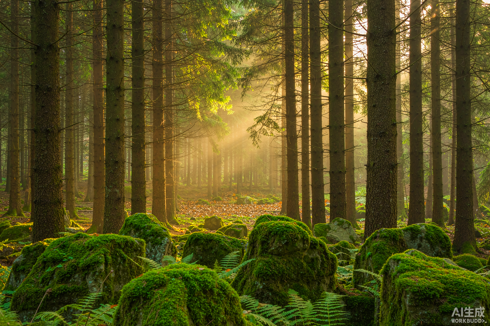
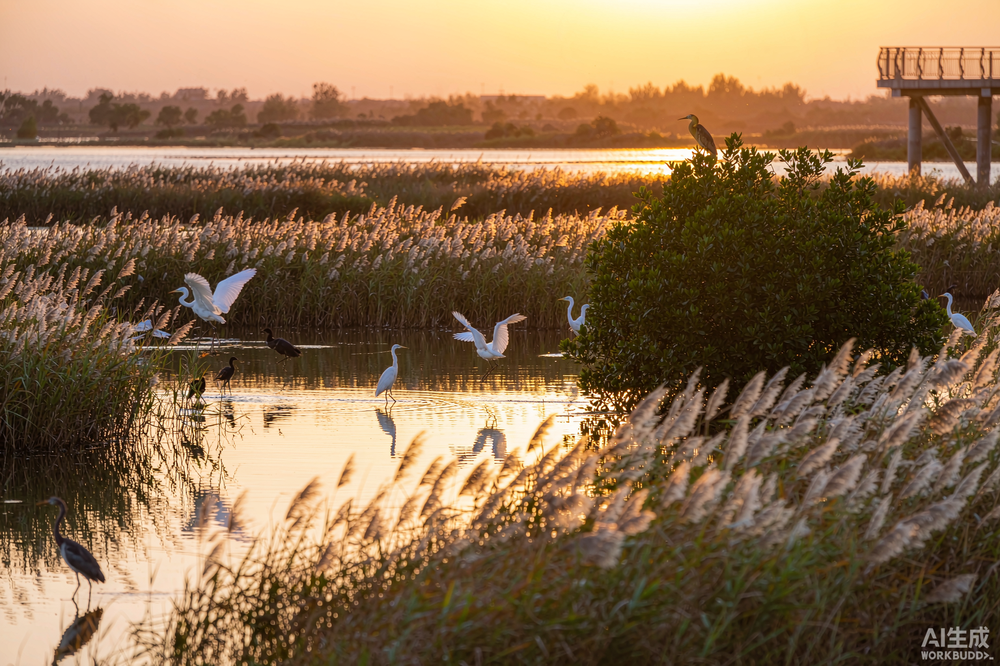
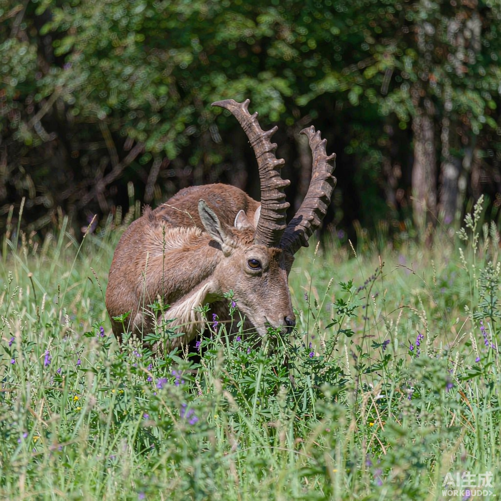

高山生态
雪山云海 · 高山生态系统
海拔三千米以上的高山带，气候寒冷、昼夜温差大，孕育了雪莲、高山杜鹃等特有植物。
Nature & Ecology
海拔三千米以上的高山带，气候寒冷、昼夜温差大，孕育了雪莲、高山杜鹃等特有植物。

森林生态清晨阳光穿过树冠形成光柱，苔藓、蕨类与高大乔木共同构成完整的森林垂直结构。

湿地生态芦苇丛生的浅水湿地是候鸟重要的停歇地，被称为“地球之肾”，具有强大的净化能力。

溪流中的鹅卵石、水生昆虫与冷水鱼构成了独特的食物链，水质与流速决定了物种的分布。

鹿类等植食动物通过取食与迁徙影响植被更新，是森林生态系统中不可或缺的一环。
每年数以亿计的候鸟沿固定路线往返，湿地为它们提供关键的补给站与繁殖地。
森林通过光合作用固定二氧化碳，是应对气候变化、维护全球生态平衡的重要力量。
http://www.dili360.com/
参考部分：① 首页“社区 BBS”板块的图文卡片（图片在上、标题在下），对应本项目“热门生态景观”的“上图下文”；② 首页“焦点 FOCUS / 景观 LANDSCAPE”板块左侧栏目名 + 右侧内容的版式，对应本项目各栏目“一左一右”的标题栏。
https://www.guokr.com/
参考部分：首页中部“缩略图在左 + 标题与来源在右”的文章列表，对应本项目“生态科普资讯”的“左图右文”。